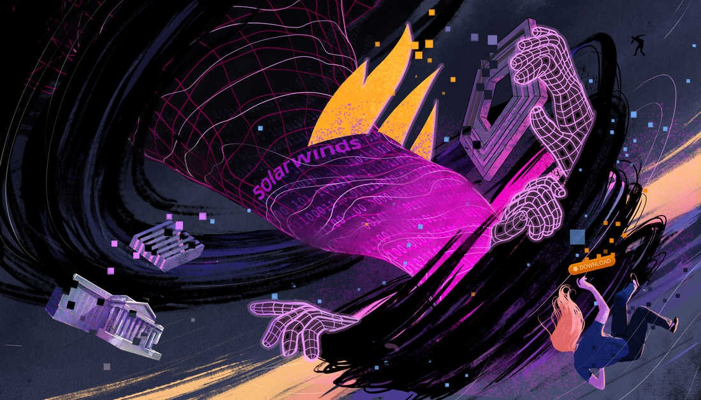
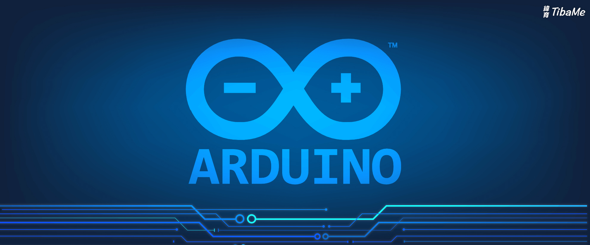
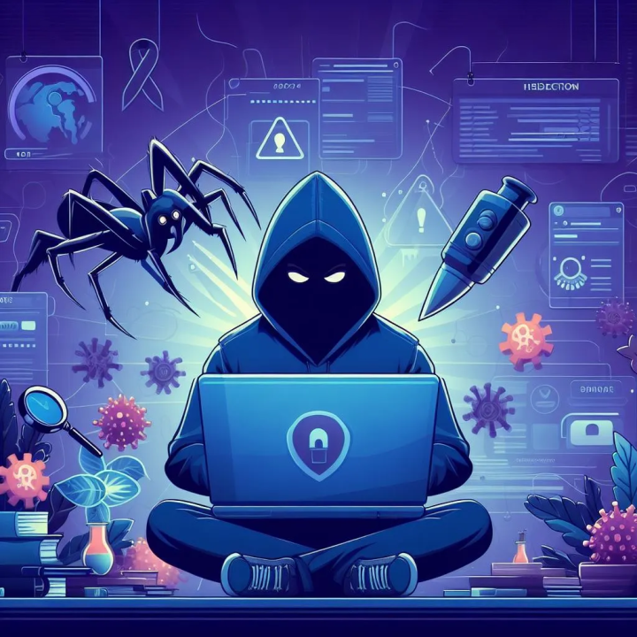
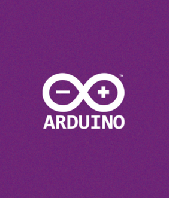

Futaba _ Webs 🕸🕸🎃🕸🕸
- The Hacker Who Laughs 🕸🕸🎃🕸🕸, Founder at Futaba_Webs 🕸🕸🎃🕸🕸
🎃 Services
🎃 Business Card
🎃 Terminal
🎃 Discord Server
🎃 Blog
🎃 Get started
🎃 Resume
🎃 Search Mode
🎃 Latest News
🎃 Catalogs
🎃 Services 2
The Hacker Who Laughs 🕸🕸🎃🕸🕸
🕸 Foxy Proxy 🕸
🕸 Footprinting 🕸
🕸 SSO 🕸
🕸 DLL/Code 🕸
🕸 ExifTool 🕸
🕸 Resources 2 🕸
🕸 SSID & MAC 🕸
🕸 Cookie Hijack 🕸

🕸 Zip2John 🕸
🕸 Botnet Part 1 🕸
🕸 Botnet Part 2 🕸
🕸 Hello Arduino 🕸

🕸 Hello Arduino 2 🕸
🕸 TCPLab 🕸

🕸 LEDProject 🕸

🕸 Ransomware2 🕸
🕸 File Inclusion 🕸
🕸 HTTP Server 🕸
🕸 Potentiometer 🕸
🕸 HydraPat 🕸
🕸 Win Recall 🕸
🎃 CONTACT ME
AnOnYmOuS
futaba.webs@gmail.com
New York, NY United States
Previous
1
2
3
4
Next
Foxy Proxy
Footprinting RECON
SSO and OpenAuth
DLL/Code Injection
ExifTool Exploit
2024 Resources 2
SSID & MAC Filtering
Cookie Session Hijacking
Zip2John
TCPLab
LEDProject
Botnet Part 1
Botnet Part 2
ArduinoLED1
ArduinoLED2
Ransomware & DLP's
File Inclusion
Python HTTP Server
Arduino Potentiometer
Hydra and Patator
Danger! Windows Recall
Search Mode
🎃 Hot-Key Maps 🎃
🎃
✨
💫
🎼
🎭
🧭
🎃 Home 🎃
🎃 Close 🎃